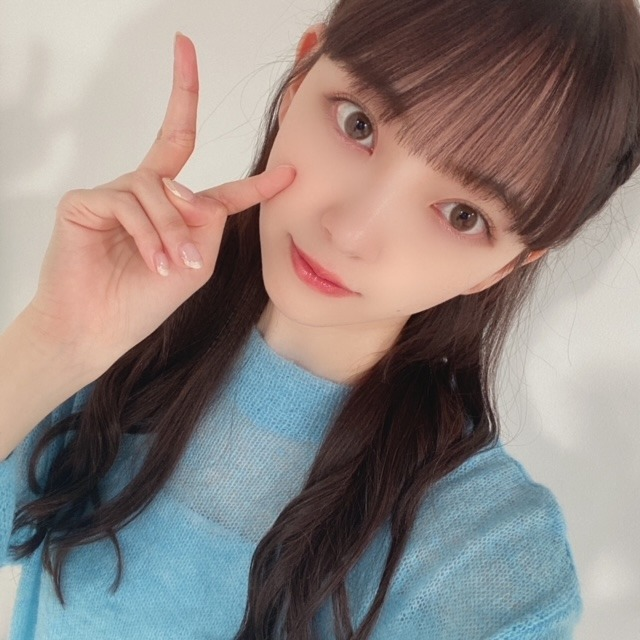

2020/1105Thu煌めく背中
先日、白石さんの卒業コンサートが
ありました。
そしてかなさんの卒業もありましたね。
ずっと乃木坂46を
引っ張ってきてくださったお二人の卒業は
時の流れを強く感じて
ただただ寂しく、でもお二人の新しい道を
応援したい気持ちと今までたくさんの背中を
見せてくださったことへの感謝の気持ちで溢れました。
そして、最後までかっこよくて
美しくてステキな先輩でした！
今まで一緒に過ごした時間は
記憶の宝物にして、私も前へ進んでいこうと思います。
本当に、本当に、お疲れ様でした☺︎
新しい道でも頑張ってください☺︎ だいすきです❤︎

もう11月ですね、、
早いです。
歌番組ラッシュ楽しみたいと思います。
みなさんも体調には気をつけて
年末を迎えてくださいね^ - ^

ん。
頑張るしかないのよ。人生。
でははは
2020/11/05 19:36
コメント(478)
未央奈さん、こんばんは
インスタ見ました
堀北コンビ健在ですね
いつまでも仲良くね(^_^)
小さい時の写真
面影が残っていて
とっても可愛いです
秋の空、見てますか
ブログの更新
楽しみにしています
応援しています(^_^)
インスタ見ました
堀北コンビ健在ですね
いつまでも仲良くね(^_^)
小さい時の写真
面影が残っていて
とっても可愛いです
秋の空、見てますか
ブログの更新
楽しみにしています
応援しています(^_^)
未央奈さん、僕も時々口内炎になりますが、第一三共ヘルスケアのトラフルBBチャージの錠剤を飲むと大体収まってます。試してみて。
え～～、ほんと口内炎大丈夫。。？(T_T)
心配すぎる。
笑ったり食べたりとかいろいろしんどいのはやっぱつらいよね。
市販のだけど塗り薬持ってるから届けてあげたいよ。
どうしても良くならなかったら病院行って診てもらった方が良いかもしれないよ(´・ω・`)
心配すぎる。
笑ったり食べたりとかいろいろしんどいのはやっぱつらいよね。
市販のだけど塗り薬持ってるから届けてあげたいよ。
どうしても良くならなかったら病院行って診てもらった方が良いかもしれないよ(´・ω・`)
堀ちゃんこんばんは！
最近いかがお過ごしでしょうか、口内炎がつらそうですね…( ´ 〜 ` )
栄養ならビタミンB群(豚肉とか)、あとは口の中を清潔にするために、うがい薬を使ってこまめにうがいするのがいいと思います！
歯磨きは口内炎に物理的な刺激が当たっちゃうので、あまり回数が多いと良くないかもです( ´ ー ` )
あとは口内炎に効くというツボも色々ありますね、「口内点」というツボが手のひら側の中指の付け根にあって押しやすそうです、血流や免疫が改善されて炎症が治りやすくなるんだとか(^^)
僕も口内炎はできやすいタイプですが、あるとしんどいですよね、食べるのも飲むのも喋るのも痛いし気になっちゃいますし( ´ 〜 ` )
お忙しいことも原因だと思いますが、今の時期はお仕事も続くでしょうから…
少しでも休む時間が長くなって、早く治ることを祈っています(>_<)
ここ数日の堀ちゃんのインスタいつもながらめっちゃ見ています！(^^)
昔の写真を見返そうコーナー、めっちゃ嬉しいです！
色んな堀ちゃんが見られるし、メンバーとのエピソードも知れるのはほんとに楽しい(o^^o)♩
堀北コンビめちゃくちゃ大好きです、2人の空気感がドストライク(^^)
いつから堀北コンビが好きになったかなぁ、かなり前ですが、知らない間にというか、2人がお互いのことを話してる時とかの雰囲気が好きで、段々と好きになったことを覚えています(*´ー｀*)
乃木坂のメンバーはみんな仲良しですが、堀北コンビは僕の中で特別です(o^^o)♩
そして投稿の一枚目できいちゃんに抱きつく堀ちゃんがめちゃくちゃに可愛いです…！堀ちゃんのポニテ…！
そして、すずほりのお2人も特別に好きです(*´ー｀*)
好きになったきっかけ、ハッキリ覚えてます、レコメン!での2人で楽しそうに話している雰囲気で一気に好きになりました(o^^o)♩
その後も相思相愛が至る所で2人とも発言していて、お互いがお互いを尊敬し合って大好きなのがいつも伝わってくるのが素敵です(*´ー｀*)
堀北コンビは「大親友」で、すずほりは極端に言ってしまうと「恋人」というイメージを勝手に持っています( ´ ▽ ` )笑
また写真とともに色んなエピソード楽しみにしていますね、毎日の癒しです(o^^o)♩
さてさて、来週からのベストアーティストで26thシングルが初披露されるんですね！楽しみです！(o^^o)
どんな曲調なのか、どんな振り付けなのか、どんな雰囲気なのか楽しみが尽きません(^^)
中心にいる堀ちゃんのパフォーマンス、1秒も見逃しません(o^^o)
いつも新しい曲のとき、堀ちゃんのダンスがとにかく楽しみなんです(*´ー｀*)♩
テレビの前で応援していますね！(o^^o)
口内炎がなかなか治らないということで、かなりお疲れも溜まっていると思います( ´ ー ` )
お昼寝なども活用して、忙しい中でもお身体大事にしてくださいね( ´ 〜 ` )
少しでも堀ちゃんが何も痛いことやしんどいことなく過ごしていけますように(>_<)
でははは！またコメントさせてくださいー！
最近いかがお過ごしでしょうか、口内炎がつらそうですね…( ´ 〜 ` )
栄養ならビタミンB群(豚肉とか)、あとは口の中を清潔にするために、うがい薬を使ってこまめにうがいするのがいいと思います！
歯磨きは口内炎に物理的な刺激が当たっちゃうので、あまり回数が多いと良くないかもです( ´ ー ` )
あとは口内炎に効くというツボも色々ありますね、「口内点」というツボが手のひら側の中指の付け根にあって押しやすそうです、血流や免疫が改善されて炎症が治りやすくなるんだとか(^^)
僕も口内炎はできやすいタイプですが、あるとしんどいですよね、食べるのも飲むのも喋るのも痛いし気になっちゃいますし( ´ 〜 ` )
お忙しいことも原因だと思いますが、今の時期はお仕事も続くでしょうから…
少しでも休む時間が長くなって、早く治ることを祈っています(>_<)
ここ数日の堀ちゃんのインスタいつもながらめっちゃ見ています！(^^)
昔の写真を見返そうコーナー、めっちゃ嬉しいです！
色んな堀ちゃんが見られるし、メンバーとのエピソードも知れるのはほんとに楽しい(o^^o)♩
堀北コンビめちゃくちゃ大好きです、2人の空気感がドストライク(^^)
いつから堀北コンビが好きになったかなぁ、かなり前ですが、知らない間にというか、2人がお互いのことを話してる時とかの雰囲気が好きで、段々と好きになったことを覚えています(*´ー｀*)
乃木坂のメンバーはみんな仲良しですが、堀北コンビは僕の中で特別です(o^^o)♩
そして投稿の一枚目できいちゃんに抱きつく堀ちゃんがめちゃくちゃに可愛いです…！堀ちゃんのポニテ…！
そして、すずほりのお2人も特別に好きです(*´ー｀*)
好きになったきっかけ、ハッキリ覚えてます、レコメン!での2人で楽しそうに話している雰囲気で一気に好きになりました(o^^o)♩
その後も相思相愛が至る所で2人とも発言していて、お互いがお互いを尊敬し合って大好きなのがいつも伝わってくるのが素敵です(*´ー｀*)
堀北コンビは「大親友」で、すずほりは極端に言ってしまうと「恋人」というイメージを勝手に持っています( ´ ▽ ` )笑
また写真とともに色んなエピソード楽しみにしていますね、毎日の癒しです(o^^o)♩
さてさて、来週からのベストアーティストで26thシングルが初披露されるんですね！楽しみです！(o^^o)
どんな曲調なのか、どんな振り付けなのか、どんな雰囲気なのか楽しみが尽きません(^^)
中心にいる堀ちゃんのパフォーマンス、1秒も見逃しません(o^^o)
いつも新しい曲のとき、堀ちゃんのダンスがとにかく楽しみなんです(*´ー｀*)♩
テレビの前で応援していますね！(o^^o)
口内炎がなかなか治らないということで、かなりお疲れも溜まっていると思います( ´ ー ` )
お昼寝なども活用して、忙しい中でもお身体大事にしてくださいね( ´ 〜 ` )
少しでも堀ちゃんが何も痛いことやしんどいことなく過ごしていけますように(>_<)
でははは！またコメントさせてくださいー！
未央奈ちゃんおはようございます‼ありがとうございました！ありがとうございます！今日から頑張ります‼気をつけて下さい。ありがとうございます‼
口内炎痛いよね
今歯茎にできてて笑っても痛い
今歯茎にできてて笑っても痛い
仕事終わって今から少し寄り道してくる
東京ドーム、神宮外苑。
外苑はイチョウ並木見てくる！
東京ドーム、神宮外苑。
外苑はイチョウ並木見てくる！
未央奈～！
口内炎大丈夫？
早く治りますように！！
昨日の乃木中観たんだけど、未央奈が思いっきり笑ってるのを観て、嬉しくなった！
やっぱり推しメンが笑ってるのを観れると嬉しいね☺️
ベストアーティストも楽しみにしてるね♪
お身体大事にしながら、お仕事頑張ってね！
口内炎大丈夫？
早く治りますように！！
昨日の乃木中観たんだけど、未央奈が思いっきり笑ってるのを観て、嬉しくなった！
やっぱり推しメンが笑ってるのを観れると嬉しいね☺️
ベストアーティストも楽しみにしてるね♪
お身体大事にしながら、お仕事頑張ってね！
未央奈さん☆！ブログの更新！ありがとうございました♫
白石麻衣さん☆の卒業コンサート！！お疲れ様でした。
白石さん☆は、乃木坂の顔そのものだったね！未央奈さん☆は、これから新しい乃木坂を引っ張っていかないといけないね！未央奈さん☆！ほんと頑張って下さいネ❤️
それから未央奈さん☆のモバメを見てると最近口内炎で悩んでいるみたいなので。やはりそういう時はお医者さんに診てもらうのが一番。
それから寝不足、食べ過ぎ、ストレスなども考えられるので、野菜を多く食べて、良く休んでお口を清潔に保っていた方がいいみたいですよ。
特にビタミンB２、B６などビタミンB群を多く摂ってね！後はお医者さんに早く診てもらってね！じゃあ、未央奈さん☆❤️お体にはくれぐれも気をつけてこれからも頑張ってくださいネ❤️❤️❤️❤️❤️❤️❤️❤️❤️❤️❤️❤️❤️❤️❤️❤️❤️❤️❤️❤️❤️❤️❤️❤️ (^-^)
白石麻衣さん☆の卒業コンサート！！お疲れ様でした。
白石さん☆は、乃木坂の顔そのものだったね！未央奈さん☆は、これから新しい乃木坂を引っ張っていかないといけないね！未央奈さん☆！ほんと頑張って下さいネ❤️
それから未央奈さん☆のモバメを見てると最近口内炎で悩んでいるみたいなので。やはりそういう時はお医者さんに診てもらうのが一番。
それから寝不足、食べ過ぎ、ストレスなども考えられるので、野菜を多く食べて、良く休んでお口を清潔に保っていた方がいいみたいですよ。
特にビタミンB２、B６などビタミンB群を多く摂ってね！後はお医者さんに早く診てもらってね！じゃあ、未央奈さん☆❤️お体にはくれぐれも気をつけてこれからも頑張ってくださいネ❤️❤️❤️❤️❤️❤️❤️❤️❤️❤️❤️❤️❤️❤️❤️❤️❤️❤️❤️❤️❤️❤️❤️❤️ (^-^)
月曜日に放送してる帰れマンデー
バスサンドで群馬・伊香保に行ってる！
バスサンドで群馬・伊香保に行ってる！
堀さん、こんばんは。
ベストアーティスト必ず見ますね。口内炎かなり辛いみたいですけど、新曲楽しみにしてるので頑張ってくださいね。
ベストアーティスト必ず見ますね。口内炎かなり辛いみたいですけど、新曲楽しみにしてるので頑張ってくださいね。
おはよう
今年も残すところあと、一ヶ月ほど
そうそう、紅白歌合戦出場おめでとう！
レコード大賞も含めて楽しみにしてます
今年は乃木坂流行語大賞ってやるのかな？
なんて思いながら、1年を振り返っています
流行語っていうのでは、ないんだけど...
個人的に一番面白かった一言は
乃木坂工事中の｢乃木坂高校生のクイズ｣の
回で、ポテチ映えの問題のときに
まいちゅんが
｢洞窟｣
って答えてたのがツボにはまりました
その後の日村さんの｢万華鏡｣とセットで
オススメしたいですね
それではお体に気をつけて
元気に新年を迎えられるよう願っています
今年も残すところあと、一ヶ月ほど
そうそう、紅白歌合戦出場おめでとう！
レコード大賞も含めて楽しみにしてます
今年は乃木坂流行語大賞ってやるのかな？
なんて思いながら、1年を振り返っています
流行語っていうのでは、ないんだけど...
個人的に一番面白かった一言は
乃木坂工事中の｢乃木坂高校生のクイズ｣の
回で、ポテチ映えの問題のときに
まいちゅんが
｢洞窟｣
って答えてたのがツボにはまりました
その後の日村さんの｢万華鏡｣とセットで
オススメしたいですね
それではお体に気をつけて
元気に新年を迎えられるよう願っています
おっ！そいつぁ良かったな (^ ^)
(^ ^)
未央奈ちゃんありがとうございます‼楽しみにしてます頑張ります‼お疲れ様です！気をつけて下さい！ありがとうございます！
未央奈さん☆❤️お元気ですか？
口内炎治って良かったね❣️
これからはバランスある食事を取るように気を配ってネ❤️
あと食べ過ぎにも気をつけてね！
じゃあ、未央奈さん☆！お体には気をつけてくださいネ❤️❤️❤️❤️❤️❤️❤️❤️❤️❤️❤️❤️❤️❤️
口内炎治って良かったね❣️
これからはバランスある食事を取るように気を配ってネ❤️
あと食べ過ぎにも気をつけてね！
じゃあ、未央奈さん☆！お体には気をつけてくださいネ❤️❤️❤️❤️❤️❤️❤️❤️❤️❤️❤️❤️❤️❤️
こんにちは今日一日お疲れさま(｡･_･｡)ﾉ明日も頑張ってね
こんにちは今日一日お疲れさま(｡･_･｡)ﾉ明日も頑張ってね
やっほやっほー！
おおおお！！口内炎治ったんだね！良かったねー＼(^o^)／
心配してたから一安心だよ。
早速美味しい朝ごはん食べたんだね～♪
これからは口内炎気にせず美味しいものたくさん食べれるね！(*^-^*)
未央奈のおでこ好きー☆
綺麗で触りたくなる。(触っちゃだめだけどw)
最近2期生メンバーとの写真と想いを載せてくれてるの良いよね～見てるよっ。
これからも一緒に頑張っていって想い出を増やしていってね(゜▽゜*)
おおおお！！口内炎治ったんだね！良かったねー＼(^o^)／
心配してたから一安心だよ。
早速美味しい朝ごはん食べたんだね～♪
これからは口内炎気にせず美味しいものたくさん食べれるね！(*^-^*)
未央奈のおでこ好きー☆
綺麗で触りたくなる。(触っちゃだめだけどw)
最近2期生メンバーとの写真と想いを載せてくれてるの良いよね～見てるよっ。
これからも一緒に頑張っていって想い出を増やしていってね(゜▽゜*)
今日も1日お疲れ！
明日、休みで連休。
さぁ！今日から舞台を福岡に移しての戦い
ペイペイドームで4連覇に王手か？
巨人が逆襲か？
見逃せない対決
明日、休みで連休。
さぁ！今日から舞台を福岡に移しての戦い
ペイペイドームで4連覇に王手か？
巨人が逆襲か？
見逃せない対決
堀ちゃん、こんばんは(・ω・)
口内炎、治ってよかったね！！
（もしかして、魔法が効いたか！？
さすが大天使まなったん
しかし、魔法ではなく「ずっきゅん！！」をかましてたら口内炎がきゅんきゅんしてたかもしれん
あるいは、口内炎に向かってさゆりんごパンチを
いつか、今度は飛鳥にずっきゅん！！をかましてみ・・・。）
これで心置き無くご飯たくさん食べられるねっ！
よかったよかった～♪
口内炎、治ってよかったね！！
（もしかして、魔法が効いたか！？
さすが大天使まなったん
しかし、魔法ではなく「ずっきゅん！！」をかましてたら口内炎がきゅんきゅんしてたかもしれん
あるいは、口内炎に向かってさゆりんごパンチを
いつか、今度は飛鳥にずっきゅん！！をかましてみ・・・。）
これで心置き無くご飯たくさん食べられるねっ！
よかったよかった～♪
未央奈ちゃんおはようございます！かなり楽しみにしてます頑張ります‼今日から頑張ります‼お疲れ様です！気をつけて下さい。体調に気をつけて下さい！ありがとうございます‼
それとは別で、相変わらず『君らしさ』のセブンネット限定ver.の表紙画像をちょいちょい見てしまう(↑笑)
未央奈ちゃんおはようございます‼ありがとうございます！楽しみにしてます頑張ります‼お疲れ様です！気をつけて下さい。体調に気をつけて下さい！
おはようございます今日一日頑張ってね。
おはようございます!
未央奈ちゃんがニード・フォー・スピード
やってるのは意外でした!
自分昔少しやってた!
自分も車好きだからワイスピの話とか
たまにしてほしいな!
そういえば、来年ワイスピの映画
公開されるらしいから楽しみ!
未央奈ちゃんがニード・フォー・スピード
やってるのは意外でした!
自分昔少しやってた!
自分も車好きだからワイスピの話とか
たまにしてほしいな!
そういえば、来年ワイスピの映画
公開されるらしいから楽しみ!
未央奈ちゃんこんにちは‼ありがとうございます！楽しみにしてます頑張ります‼お疲れ様です！気をつけて下さい。体調に気をつけて下さい！ありがとうございます‼
未央奈ちゃんこんにちは‼ありがとうございます！楽しみにしてます頑張ります‼お疲れ様です。
みおなちゃん、こんにちは。
ドリームバイト、僕は見たよ。録画して見ました。
フレンチシェフを目指す俊智君、最後の就業体験でしたね。
得意料理の牛ヒレ肉を使った料理を作っていましたね。
関谷シェフは、とてもほめていましたね。俊智君、エプロンをプレゼントでもらっていましたね。
俊智君、一流のフレンチシェフになってほしいですね。
みおなちゃん、体調に気をつけて仕事頑張ってね。
またコメントするね。
ドリームバイト、僕は見たよ。録画して見ました。
フレンチシェフを目指す俊智君、最後の就業体験でしたね。
得意料理の牛ヒレ肉を使った料理を作っていましたね。
関谷シェフは、とてもほめていましたね。俊智君、エプロンをプレゼントでもらっていましたね。
俊智君、一流のフレンチシェフになってほしいですね。
みおなちゃん、体調に気をつけて仕事頑張ってね。
またコメントするね。
こんにちは今日一日お疲れさま(｡･_･｡)ﾉ明日も頑張ってねゆい頑張っています
こんにちは今日一日お疲れさま(｡･_･｡)ﾉ明日も頑張ってね楽しみです
今日19時からベストアーティスト
新曲のタイトルも決まり神曲とも言われてるとも
聞いてるんだけど？どんな感じになっているか
楽しみ！
18時半からSMBC日本シリーズ2020
今日運命の第4戦。ソフトバンク4連覇か？
巨人が巻き返すか？
新曲のタイトルも決まり神曲とも言われてるとも
聞いてるんだけど？どんな感じになっているか
楽しみ！
18時半からSMBC日本シリーズ2020
今日運命の第4戦。ソフトバンク4連覇か？
巨人が巻き返すか？
みおな〜♪
こんばんはっ！
先週の乃木坂工事中内で
まいちゅんがデブ菌のこと語ってたので
それについて少し詳しく話してみようかな
いわゆるデブ菌と呼ばれるものは
フィルミクテス門というグループの
腸内細菌でこれが多いと脂肪や糖をため込み
やすい体質になることがわかってきてます
一方、ヤセ菌と呼ばれるものは
バクテロイデス門というグループの
腸内細菌でこれが多いと脂肪燃焼しやすい
体質になります
フィルミクテス門の菌には糖質を代謝する
働きを持つものが多くて、食べたものから
たくさんのエネルギーを取り出します
つまり少ししか食べなくても
たくさんのエネルギーが取り出され
余ったものは脂肪に変えられやすいのです
反対にバクテロイデス門の菌は
栄養吸収の効率が悪く
たくさん食べても少ししかエネルギーに
なりません
また、バクテロイデス門の菌は
野菜や果物などに含まれる食物繊維や
オリゴ糖を腸内で発酵させて、短鎖脂肪酸
という物質を生成しています
この短鎖脂肪酸は、腸が活発に活動するため
のエネルギー源となる物質で、
腸内フローラを整え、免疫機能を高めて
腸の蠕動運動を促進する働きがあります
じゃあ、デブ菌を抑えてヤセ菌を増やすには
どうしたらいいのか？
答えは簡単です
フィルミクテス門が好む食べ物を減らして
バクテロイデス門には大好物を与えれば
いいんです
すなわち、炭水化物や甘いものを減らして
食物繊維たっぷりの食事を摂るように
していけばいいわけです
痩せるも太るも毎日の食生活しだい〜♪
と、まぁここまでは教科書どおり
それだけじゃつまらないでしょう？
実は最近、
痩せてる人の腸内細菌を調べてみると
太ってる人に比べて
そのバリエーションが豊富だということ
がわかってきました
いや、長くなるのでやめておきます
勿体ぶります(●´3｀●)〜♪
こんばんはっ！
先週の乃木坂工事中内で
まいちゅんがデブ菌のこと語ってたので
それについて少し詳しく話してみようかな
いわゆるデブ菌と呼ばれるものは
フィルミクテス門というグループの
腸内細菌でこれが多いと脂肪や糖をため込み
やすい体質になることがわかってきてます
一方、ヤセ菌と呼ばれるものは
バクテロイデス門というグループの
腸内細菌でこれが多いと脂肪燃焼しやすい
体質になります
フィルミクテス門の菌には糖質を代謝する
働きを持つものが多くて、食べたものから
たくさんのエネルギーを取り出します
つまり少ししか食べなくても
たくさんのエネルギーが取り出され
余ったものは脂肪に変えられやすいのです
反対にバクテロイデス門の菌は
栄養吸収の効率が悪く
たくさん食べても少ししかエネルギーに
なりません
また、バクテロイデス門の菌は
野菜や果物などに含まれる食物繊維や
オリゴ糖を腸内で発酵させて、短鎖脂肪酸
という物質を生成しています
この短鎖脂肪酸は、腸が活発に活動するため
のエネルギー源となる物質で、
腸内フローラを整え、免疫機能を高めて
腸の蠕動運動を促進する働きがあります
じゃあ、デブ菌を抑えてヤセ菌を増やすには
どうしたらいいのか？
答えは簡単です
フィルミクテス門が好む食べ物を減らして
バクテロイデス門には大好物を与えれば
いいんです
すなわち、炭水化物や甘いものを減らして
食物繊維たっぷりの食事を摂るように
していけばいいわけです
痩せるも太るも毎日の食生活しだい〜♪
と、まぁここまでは教科書どおり
それだけじゃつまらないでしょう？
実は最近、
痩せてる人の腸内細菌を調べてみると
太ってる人に比べて
そのバリエーションが豊富だということ
がわかってきました
いや、長くなるのでやめておきます
勿体ぶります(●´3｀●)〜♪
未央奈ちゃん頑張れ
テレビの前から応援してるよー
テレビの前から応援してるよー
ベストアーティスト！！ お疲れ様です！！
ブログアップ、待ってます！！
ブログアップ、待ってます！！
未央奈さん、たった今ベストヒットでの新シングル、パフォーマンス初披露見させて貰いましたよ。
未央奈さんやメンバー皆、とても良いパフォーマンスでしたね。
この初披露前に心配してましたが、口内炎治って良かったですよ。
(^.^)
CRYSTALより。
未央奈さんやメンバー皆、とても良いパフォーマンスでしたね。
この初披露前に心配してましたが、口内炎治って良かったですよ。
(^.^)
CRYSTALより。
ベストアーティストお疲れ
ちゃんと見てたよ！
新しい乃木坂にピッタリな感じの新曲で聴いていて
やっぱり乃木坂は違うなと感じた。
新・エースも誕生して、これからの乃木坂を
引っ張っていく存在！
是非、皆で進み続けよう
ちゃんと見てたよ！
新しい乃木坂にピッタリな感じの新曲で聴いていて
やっぱり乃木坂は違うなと感じた。
新・エースも誕生して、これからの乃木坂を
引っ張っていく存在！
是非、皆で進み続けよう
こんばんは～～！
ベストアーティストちゃんと観てたよ！
新曲良い曲だね！メロディーも詞も良いね！ダンスのフリとフォーメーションの入れ替えとかも全体的に早めで今までとちょっと違う感じで新しいよね(゜▽゜*)
これは好きになりそう！
未央奈もバッチリ見つけてたよ！やっぱり中央の裏センターは分かりやすくていいね♪
今回はポニテだったよね！めっちゃ似合ってて目でずっと追ってたよ(*´-`)
これからいろんな歌番組で披露出来るの楽しみだねー。
モバメありがとう！
いつも可愛いけど、今回の自撮りの未央奈すごい好き！
また惚れ直した～♪
ベストアーティストちゃんと観てたよ！
新曲良い曲だね！メロディーも詞も良いね！ダンスのフリとフォーメーションの入れ替えとかも全体的に早めで今までとちょっと違う感じで新しいよね(゜▽゜*)
これは好きになりそう！
未央奈もバッチリ見つけてたよ！やっぱり中央の裏センターは分かりやすくていいね♪
今回はポニテだったよね！めっちゃ似合ってて目でずっと追ってたよ(*´-`)
これからいろんな歌番組で披露出来るの楽しみだねー。
モバメありがとう！
いつも可愛いけど、今回の自撮りの未央奈すごい好き！
また惚れ直した～♪
やっぱりキレがあるね！
あなたのパフォーマンス。
あなたのパフォーマンス。
堀さん、こんばんは。
新曲披露見ましたよ。髪型とシュシュのおかげも有って見付けやすかったです。ジャンプするところも可愛くて、堀さんが終始美人さんで、最後の立ち姿も美しかったです。
新曲は振付や歌詞が乃木坂らしい曲ですね。歌詞の主人公は今までより若くなってこれから新しい物語を始めるようで、これまで育ててきた乃木坂らしさを更に伸ばしていこうとしてるのかなって思いました。
風景描写の代わりにノートが出るのは世界が狭いことを表してるのかなとか色々気になるので早く全編聞きたいです。
それにしても自分を好きになるのってアイドルとファン両方にとって大きな目標なのかも知れませんね。表題曲に恋愛要素が無いのはアイドルとファンが同じ方向を向いてるってことにも思えました。
そういえば大事な新曲披露前に口内炎直って良かったです。今後も歌番組が続いて休む暇もあまり無いかと思うので、どうか無理せず過ごしてくださいね。
新曲披露見ましたよ。髪型とシュシュのおかげも有って見付けやすかったです。ジャンプするところも可愛くて、堀さんが終始美人さんで、最後の立ち姿も美しかったです。
新曲は振付や歌詞が乃木坂らしい曲ですね。歌詞の主人公は今までより若くなってこれから新しい物語を始めるようで、これまで育ててきた乃木坂らしさを更に伸ばしていこうとしてるのかなって思いました。
風景描写の代わりにノートが出るのは世界が狭いことを表してるのかなとか色々気になるので早く全編聞きたいです。
それにしても自分を好きになるのってアイドルとファン両方にとって大きな目標なのかも知れませんね。表題曲に恋愛要素が無いのはアイドルとファンが同じ方向を向いてるってことにも思えました。
そういえば大事な新曲披露前に口内炎直って良かったです。今後も歌番組が続いて休む暇もあまり無いかと思うので、どうか無理せず過ごしてくださいね。
おはよう
ベストアーティストお疲れ
2列目でもちゃんと見つけられたよ！
制服も変わってて初期の頃の制服に似てる感じで
可愛いかった。
ベストアーティストお疲れ
2列目でもちゃんと見つけられたよ！
制服も変わってて初期の頃の制服に似てる感じで
可愛いかった。
こんにちは～
、、今日は、、11月26日、、いいふろの日(笑)、、
、、ふところも、、からだも、、あたたまって、、ゆっくり、、やすんでね～
、、じゃあ、、またね～
、、今日は、、11月26日、、いいふろの日(笑)、、
、、ふところも、、からだも、、あたたまって、、ゆっくり、、やすんでね～
、、じゃあ、、またね～
朝、起きて喉乾いてる事、たまにある
乾燥してると一番乾くよ！
不思議な夢、そんな見ない方がいいと思うけど？
夢の見すぎって怖いと思うと水分がいつの間にか
足らなくなってきちゃうから余計だよ。
寝るときは、窓閉めて寝てますか？
開けて寝ると喉乾くよ笑
乾燥してると一番乾くよ！
不思議な夢、そんな見ない方がいいと思うけど？
夢の見すぎって怖いと思うと水分がいつの間にか
足らなくなってきちゃうから余計だよ。
寝るときは、窓閉めて寝てますか？
開けて寝ると喉乾くよ笑
おはよ～♪
モバメありがとうー(゜▽゜*)
分かるよ！起きると喉乾いてたり、少しイガイガしたりするよね(^-^;)
それって、部屋が乾燥気味だったり知らないうちに口呼吸しちゃってたりとかが可能性あるかもだね。
これからは加湿を気にしないといけない季節だよねー。
特に未央奈はアイドルで歌を歌うんだから喉は大事にしないとじゃんー！
あと、寝るときまで嫌かもしれないけどマスクしたまま寝ると喉あんまり乾いたりしないことが多いよ！( ・∇・)
ふむふむ、不思議な夢みたんだねー。
何できいちゃんとそんな状況になったのか気になるね(；・∀・)
怖い夢ともちょっと違うのかな？
でも最終的には抜け出すことが出来たなら、ゴールは明るいよってことを知らせてくれてるのかな！ヽ(・∀・)ノ
前向きに頑張っていこー☆
インスタのモノクロ未央奈もかっこ可愛いくて好きってなりました(^ー^)
モバメありがとうー(゜▽゜*)
分かるよ！起きると喉乾いてたり、少しイガイガしたりするよね(^-^;)
それって、部屋が乾燥気味だったり知らないうちに口呼吸しちゃってたりとかが可能性あるかもだね。
これからは加湿を気にしないといけない季節だよねー。
特に未央奈はアイドルで歌を歌うんだから喉は大事にしないとじゃんー！
あと、寝るときまで嫌かもしれないけどマスクしたまま寝ると喉あんまり乾いたりしないことが多いよ！( ・∇・)
ふむふむ、不思議な夢みたんだねー。
何できいちゃんとそんな状況になったのか気になるね(；・∀・)
怖い夢ともちょっと違うのかな？
でも最終的には抜け出すことが出来たなら、ゴールは明るいよってことを知らせてくれてるのかな！ヽ(・∀・)ノ
前向きに頑張っていこー☆
インスタのモノクロ未央奈もかっこ可愛いくて好きってなりました(^ー^)
新衣装もかわちいだったよー♪w
ポニテも良かったし、これからまたいろいろ髪型も見せてね(*^-^*)
ポニテも良かったし、これからまたいろいろ髪型も見せてね(*^-^*)
みおなちゃん、こんにちは。
ベストアーティスト、僕は見たよ。録画しながら見ました。
みおなちゃん、めっちゃ綺麗で、めっちゃかわいかったです。
新曲の、僕は僕を好きになる、とてもすてきで、とてもいい曲ですね。パフォーマンスも、とてもすてきでしたよ。
みおなちゃん、体調に気をつけて仕事頑張ってね。
またコメントするね。
ベストアーティスト、僕は見たよ。録画しながら見ました。
みおなちゃん、めっちゃ綺麗で、めっちゃかわいかったです。
新曲の、僕は僕を好きになる、とてもすてきで、とてもいい曲ですね。パフォーマンスも、とてもすてきでしたよ。
みおなちゃん、体調に気をつけて仕事頑張ってね。
またコメントするね。
こんにちは今日一日お疲れさま(｡･_･｡)ﾉ明日も頑張ってね
未央奈ちゃんこんばんは‼ありがとうございます！昨日はありがとうございます‼ありがとうございました‼頑張ります‼気をつけて下さい！ありがとうございます
そういえば、堀ちゃんってアベンジャーズ見た事ある？
未央なさん今晩は、昨日の歌番組見ました、乃木坂の白石さん、中田さんが乃木坂を卒業してしまったけど、これからも乃木坂を応援していきます、人生頑張らないとと書いて有ったけど、人生がんばり過ぎると、余り良くないので、人生ほどほどに頑張って行きましょう、頑張り過ぎは体に良くないので、この時期は体調を壊しやすいので風邪など引かない様に注意して下さいね。


口内炎になったらご飯もおいしくないし、憂鬱だよね。
免疫力が落ちてくるとなりやすいみたいだし
未央奈ちゃん、最近ちょっと頑張り過ぎてない？
忙しいから難しいかもしれないけど、たまにはゆっくり身体を休めて下さいね。
口内炎早く治りますように。